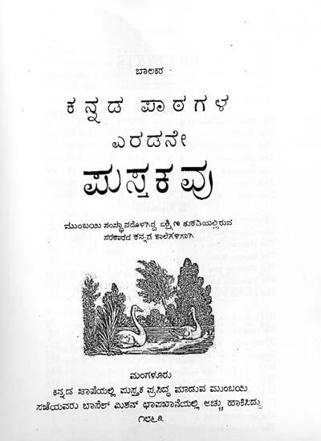

ಬಾಲಕರ ಕನ್ನಡ ಪಾಠಗಳು
ಬಾಲಕರ ಕನ್ನಡ ಪಾಠಗಳ ಎರಡನೇ ಪುಸ್ತಕವು- Second BOOK OF LESSONS in Canarese- ಎನ್ನುವ ಈ ಪುಸ್ತಕವನ್ನು, ಕನ್ನಡ ಭಾಷೆಯಲ್ಲಿ ಪುಸ್ತಕ ಪ್ರಸಿದ್ಧಿ ಮಾಡುವ ಮುಂಬಯಿ ಸಭೆಯವರು, ಮಂಗಳೂರು ಬಾಸೆಲ್ ಮಿಶನ್ ಛಾಪಖಾನೆಯಲ್ಲಿ 1863ರಲ್ಲಿ, ಮುಂಬಯಿ ಸಂಸ್ಥಾನದೊಳಗಿದ್ದ ದಕ್ಷಿಣ ತುಕಡಿಯಲ್ಲಿರುವ ಸರಕಾರದ ಕನ್ನಡ ಶಾಲೆಗಳಿಗಾಗಿ ಅಚ್ಚು ಹಾಕಿಸಿದ್ದಾರೆ.
ಇದೇ ಸಂಸ್ಥೆಯವರು ಬಾಲಕರ ಕನ್ನಡ ಪಾಠಗಳ ಮೊದಲನೇ ಪುಸ್ತಕವು- First BOOK OF LESSONS in Canarese- ಎನ್ನುವ ಪುಸ್ತಕವನ್ನು ಮುಂಬಯಿಯ ಜನ ಬುದ್ಧಿ ವೃದ್ಧಿ ಸಂಘದವರಿಗಾಗಿ 1863ರಲ್ಲಿ ಬಾಸೆಲ್ ಮಿಶನ್ ಛಾಪಖಾನೆಯಲ್ಲಿ ಛಾಪಿಸಿ ದ್ದರು. ಪ್ರಸ್ತುತ ಎರಡನೇ ಪುಸ್ತಕದ ಅನುಕ್ರಮಣಿಕೆಯಲ್ಲಿ 7 ಮೃಗವರ್ಣನೆಗಳೂ, 7 ವೃಕ್ಷವರ್ಣನೆಗಳೂ, 7 ಧಾತುವರ್ಣನೆಗಳೂ (ಧಾತು=ಲೋಹ), 7ಕಥೆಗಳೂ, 7 ನೀತಿ ಪಾಠಗಳೂ, 9 ಪದ್ಯಗಳೂ, 6 ವಿವಿಧ ರೀತಿಯ ಪತ್ರಗಳೂ ಸೇರಿ ಒಟ್ಟು 50 ಪಾಠಗಳಿದ್ದು ವೈವಿಧ್ಯಮಯವಾಗಿದೆ. ಅನೇಕ ಪಾಠಗಳಿಗೆ ಸೂಕ್ತವಾದ ಚಿತ್ರಗಳನ್ನು ಅಳವಡಿಸಲಾಗಿದೆ.
ಒಂಬತ್ತೂ ಪದ್ಯಗುಚ್ಛಗಳು ಭಾಮಿನಿ ಷಟ್ಪದಿಯಲ್ಲಿವೆ. ಕನ್ನಡದ ಜೊತೆಗೆ ಐವತ್ತೂ ಪಾಠಗಳಿಗೆ ಇಂಗ್ಲಿಷ್ನಲ್ಲಿಯೂ ಶೀರ್ಷಿಕೆಗಳನ್ನು ನೀಡಲಾಗಿದೆ. 64 ಪುಟಗಳ, ಬೆಲೆ ನಮೂದಾಗದ ಈ ಪುಸ್ತಕದ ಸಂಪಾದಕರಾಗಲೀ ಇಲ್ಲಿನ ಪದ್ಯಗಳನ್ನು ರಚಿಸಿದವರಾಗಲೀ ಯಾರು ಎನ್ನುವುದರ ಸೂಚನೆಗಳು ಪುಸ್ತಕದಲ್ಲಿ ಇಲ್ಲ. ಒಟ್ಟು ಪುಸ್ತಕದ ಸ್ವರೂಪವನ್ನು ಗಮನಿಸಿದರೆ ಯಾರೋ ಓರ್ವ ವಿದೇಶೀ ಪಾದ್ರಿ, ದೇಸೀ ವಿದ್ವಾಂಸರ ನೆರವಿಲ್ಲದೆ ತಾನೇ ಸ್ವತಃ ಈ ಕೃತಿ ರಚಿಸಿರುವಂತೆ ತೋರುತ್ತದೆ. ಇದಕ್ಕೆ ನಿದರ್ಶನವಾಗಿ ಮೊದಲನೆಯ ಪಾಠವಾದ ಹೊಸ ಪುಸ್ತಕ ಎನ್ನವ ಭಾಮಿನೀ ಷಟ್ಪದಿಯ ಎರಡು ಪದ್ಯಗಳನ್ನು ಗಮನಿಸಬಹುದು.
ಮೊದಲ ಷಟ್ಪದಿಯಲ್ಲಿ– ಬಾಲಕರ ಕನ್ನಡ ಪಾಠಗಳ ಮೊದಲನೇ ಪುಸ್ತಕವು- ಕೃತಿಯ ಪ್ರಸ್ತಾಪವಿದೆ: 1. ಬಾಲಕರೆ ನೀಂ ಮೊದಲ ಪುಸ್ತಕ | ಸಾಲ್ಯೊಳೋದಿದಿರಲ್ಲವದರೊಳ | ಧೂಳಿನಕ್ಷರ, ಶಬ್ದ, ಮಡಿ, ಕಥೆ, ನೀತಿ, ಪಶುವಿವರ, || ಮೇಲೆ ಸುಕವಿತೆ ಪಾಠದೊಳಗಿನ | ಶೀಲವನು ನೀವರಿತು, ಬೇಗ ಸು | ಶೀಲರೆಂಬುವ ಪೆಸರು ಮಿತ್ರರೆ, ಪಡಿದುಕೊಂಡಿಹಿರಿ || - ಈ ಪದ್ಯದಲ್ಲಿ ವಿದ್ಯಾರ್ಥಿಗಳು ಮೊದಲನೆಯ ಪುಸ್ತಕದ ಮೂಲಕ ಧೂಳಿನಲ್ಲಿ (=ಮರಳಿನಲ್ಲಿ) ಅಕ್ಷರಗಳನ್ನು ತಿದ್ದುತ್ತಿದ್ದುದರ ಪ್ರಸ್ತಾಪವಿದೆ. 2. ಎಳಿಯ ಹುಡುಗರೆ ಲಲಿಸಿ ಕೇಳೀ | ಸುಲಭ ಪುಸ್ತಕ ನಿಮ್ಮಗೋಸ್ಕರ | ಬಲು ಶ್ರಮದಿ ನಾವಿರಚಿಸಿಹೆನೀಗತಿ ಮಮತೆಯಿಂದ ; || ಗೆಳಿಯರೆಲ್ಲರು ಕೂಡಿ, ನೀವೀ | ಚಲುವ ಪುಸ್ತಕವನ್ನು ಕಲಿತಿದ | ರೊಳಗೆ ಬರಿದದ್ದೆಲ್ಲ ತಿಳಿಯಲು, ಜಾಣರಾಗುವಿರೀ, || –ಈ ಪದ್ಯದಲ್ಲಿ ಬರುವ ಲಲಿಸಿ, ನಿಮ್ಮಗೆ ಎನ್ನುವ ರೀತಿಯ ಶಬ್ದಗಳನ್ನೂ ಹಾಗೂ 6ನೆಯ ಸಾಲಿನ ಕೊನೆಯಲ್ಲಿ ದೀರ್ಘಾಕ್ಷರವನ್ನೂ, 36ನೆಯ ಪದ್ಯದಲ್ಲಿ ಬರುವ ಮಿತ್ರಗಳೇ ಎನ್ನುವ ಪ್ರಯೋಗಗಳನ್ನೂ ದೇಸಿ ವಿದ್ವಾಂಸರು ಮಾಡುತ್ತಿರಲಿಲ್ಲ. ನಾ ವಿರಚಿಸಿಹೆನು ಈಗ ಎನ್ನುವ ಪ್ರಯೋಗವಿರುವುದರಿಂದ ಒಂದು ಸಮಿತಿಗೆ ಬದಲು ಏಕವ್ಯಕ್ತಿ ಇದನ್ನು ರಚಿಸಿರುವುದು ಸ್ಪಷ್ಟವಾಗುತ್ತದೆ.
ಈ ಪಠ್ಯದ 49ನೆಯ ಗದ್ಯ ಪಾಠ ಮತ್ತು ೫೦ನೆಯ ಪದ್ಯ ಪಾಠ ಬಹಳ ಕುತೂಹಲಕಾರಿಯೂ ಮಹತ್ವದ್ದೂ ಆಗಿದೆ. 49ನೆಯ ಪಾಠವಾದ ‘ಸ್ವರಾಜನಿಷ್ಠೆ’ ಗದ್ಯಭಾಗದಲ್ಲಿ ಲೇಖಕನು– ‘ಮುಂದೆ ಬರೆದ ಕವಿತ್ವವು ಸ್ವರಾಜನಿಷ್ಠೆಯ ಸಂಬಂಧದ್ದಾಗಿದೆ. ಅದನ್ನು ಪ್ರತಿ ಒಬ್ಬೊಬ್ಬ ಹುಡುಗನು ಕಲಿಯಬೇಕು. ಅದು ಎಷ್ಟೋ ವರ್ಷಗಳ ಹಿಂದೆ ಇಂಗ್ಲಂದ ದೇಶದ ಅರಸನಾದ ಜೇಮ್ಸ ಮಹಾರಾಜನ ಮೇಲೆ, ಕ್ಯಾರಿ ಎಂಬ ಹೆಸರಿನ ಒಬ್ಬ ಕವಿಯಿಂದ ಬರಿಯಲ್ಪಟ್ಟಿತ್ತು.... ಈ ಪ್ರಕಾರ ಅದು ಈ ದಿವಸದವರೆಗೆ ನಡಿಯುತ್ತ ಬಂದದೆ’ ಎಂಬ ಅಪೂರ್ವ ಮಾಹಿತಿಯನ್ನು ನೀಡಿದ್ದಾನೆ. ಇದು ಏಕೆ ಮಹತ್ವದ ಮಾಹಿತಿ ಎಂದರೆ, ಈ ಕ್ಯಾರಿ ಎನ್ನುವವನೇ ಲಭ್ಯವಾಗಿರುವ ಮೊಟ್ಟಮೊದಲು ಅಚ್ಚಾದ ಕನ್ನಡದ ಮುದ್ರಣದ ಪುಸ್ತಕವಾದ- ಬಂಗಾಳದ ಸೆರಾಂಪೂರ್ನ ಮಿಷನ್ ಪ್ರೆಸ್ನಿಂದ 1817ರಲ್ಲಿ ಪ್ರಕಟವಾದ A Grammar of the Kurnata Language ಪುಸ್ತಕದ ಕರ್ತೃ ಕ್ಯಾರಿ, ವಿಲಿಯಂ.
50ನೇ ಪದ್ಯ ಪಾಠವಾದ ‘ಪ್ರಜಗಳ ಹಾಡು’ (ಭಾಮಿನೀ ಷಟ್ಪದಿ) ಕನ್ನಡದ ಮೊತ್ತಮೊದಲ ಮುದ್ರಿತ ಪದ್ಯವಾಗುತ್ತದೆ. ಇದರ ಕಾಲವೂ ಸುಮಾರು 1817ರ ಆಸುಪಾಸಿನ ಕಾಲವೇ ಆಗಿದೆ. ಈ ಐತಿಹಾಸಿಕ ಮಹತ್ವದ ಕಾರಣದಿಂದಾಗಿ ವಿಲಿಯಂ ಕ್ಯಾರಿಯವರ ‘ಪ್ರಜಗಳ ಹಾಡು’ (ರಾಣಿಯು ರಕ್ಷಿಸಲ್ಪಡಲಿ) ಎನ್ನುವ ನಾಲ್ಕು ಪದ್ಯಗಳಿರುವ ಭಾಮಿನೀ ಷಟ್ಪದಿಯ ಕವಿತೆಯ ಪೂರ್ಣ ಪಾಠವನ್ನು ಇಲ್ಲಿ ನೀಡಿರುತ್ತೇನೆ.
ದೇವ ರಕ್ಷಿಸು ನಿರುತದಲಿ ಜಗ | ತೀವಲಯವನು ಸತ್ಕರುಣದಲಿ | ಕಾವ ಕರುಣಾಕರನೆ ರಕ್ಷಿಸು ನಮ್ಮ ರಾಣಿಯನು || ಸಾವಧಾನದಿ ರಾಜ್ಯವಾಳಿಸು | ತಾವಗಂ ಜಯ ಸುಖ ಸುಕೀರ್ತಿಗ | ಳೀವುತಿಂಗ್ಲವದ ಸುರಾಣಿಯ ರಕ್ಷಿಸನುದಿನದಿ || 1 ||. ಜಡಿದು ಬಿಡುವುದು ನಮ್ಮರಸಿಯೊಳ್ | ಕೆಡಕು ಬಯಸುವ ಪಗೆಯರನು ಮ | ತ್ತಡಿಗಡಿಗವರು ಮಾಡುತಿಹ ದುರ್ಯುಕ್ತಿಗಳನೆಲ್ಲ || ತಡವಿ ನಿಷ್ಫಲ ಮಾಡು ಗೊಂದಲ | ಪಡಿಸವರ ರಾಜ್ಯದಲಿ ಸಲೆ ನಿಂ | ನಡಿಗೆ ನಂಬಿದೆವಾವು ರಕ್ಷಿಸು ರಕ್ಷಿಸನುದಿನದಿ || 2 ||. ಆಸು ಹೃದಯದ ರಾಣಿ ನಮ್ಮಯ | ದೇಶವಾಳಲಿ ಬಹು ದಿವಸವೆಂ | ಬಾಶೆಯತಿಶಯ ನಿನ್ನಡಿಗೆ ಶೇರಿಸಿದೆವಾವಿನ್ನು || ಈ ಸಮಸ್ತವ ನಿರ್ಮಿಸಿದ ಜಗ | ದೀಶ ನಿನ್ನಯ ಬಳಿಗಿರುವ ನಾ | ನಾ ವಸ್ತುಗಳಿತ್ತು ರಾಣಿಯ ರಕ್ಷಿಸನುದಿನದಿ || 3 ||. ಪರಮ ಹಿತಕರ ಕಟ್ಟಳೆಗಳನು | ವಿರಚಿಸುತ ನಾವೆಲ್ಲರಂತಃ | ಕರಣದಲ್ಲ್ಯಿಂ ಆನಂದದಲಿ ಕೊಂಡಾಡುತಿರು ವಂತ್ತೆ || ನೆರೆ ಸುಕೃತಿಗಳ ಮಾಡಿ ಪ್ರಜರನು | ಪೊರೆಯ ಬೇಕೆಂಬುವ ಸುಬುದ್ಧಿಯ | ನರಸಿಗಿತ್ತವರನ್ನು ಕರುಣದಿ ರಕ್ಷಿಸನುದಿನದಿ || 4 || .
ಕ್ಯಾರಿ ಬರೆದದ್ದು ಜೇಮ್ಸ್ ಎನ್ನುವ ಅರಸನ ಮೇಲೆ. ಇಲ್ಲಿ ಜೇಮ್ಸ್ಗೆ ಬದಲು ರಾಣಿಯ ಹೆಸರನ್ನು ನಮೂದಿಸಲಾಗಿದೆ. ಈ ಪದ್ಯದಲ್ಲಿ ಇನ್ನೂ ಒಂದು ಅಂಶ ಗಮನಿಸಬಹುದು. ಇಲ್ಲಿನ 2ನೇ ಪದ್ಯದಿಂದ ನಮ್ಮ ಜನ ಕೆಲವರಾದರೂ ಇಂಗ್ಲೆಂಡಿನ ರಾಣಿಗೆ ವಿರೋಧವಾಗಿದ್ದರು ಎನ್ನುವ ಮಹತ್ವದ ಅಂಶವೂ ಹೊರಹೊಮ್ಮುತ್ತದೆ. ಒಳ್ಳೇ ಉಪದೇಶ ಎನ್ನುವ ಎರಡು ಭಾಮಿನೀ ಪದ್ಯಗಳಿರುವ ಕವಿತೆಯನ್ನು ಗಮನಿಸಿದರೆ ಆ ಪದ್ಯ ರಚಿಸಿದ ಕವಿಯ ಮೇಲೆ ವಚನಕಾರರು, ಸರ್ವಜ್ಞ, ಕೀರ್ತನಕಾರರು ಹಾಗೂ ಮಹಲಿಂಗ ರಂಗನ ಪ್ರಭಾವವಿರುವುದು ಸ್ಪಷ್ಟವಾಗಿ ತಿಳಿಯುತ್ತದೆ. ಆ ಎರಡು ಪದ್ಯಗಳು ಹೀಗಿವೆ.
ಸುಳ್ಳನಾಡಲಿ ಬೇಡ, ಜನರೊಳು | ಕಳ್ಳನೆನಿಸಲಿ ಬೇಡ ನೀ ಮೈ | ಗಳ್ಳನಾಗಲಿ ಬೇಡ ಗುರು ತಾಯ್ತಂದೆಗಳ ನುಡಿಗೆ || ಒಳ್ಳೆತನ ಬಿಡಬೇಡ ಪ್ರಾಣಿಗ | ಳಲ್ಲಿ ನಿರ್ದಯನಾಗ ಬೇಡತಿ | ಕ್ಷುಲ್ಲಕರ ಸಂಗದಲಿ ಮುಣುಗಲಿ ಬೇಡ ಕೆಡ ಬೇಡ || 1 ||.
ಬಡವರಿಗೆ ಬಳಲಿಸಲಿ ಬೇಡೊಡ | ನುಡಿದ ಭಾಷೆಗೆ ತಪ್ಪಬೇಡತಿ | ನಡತೆ ಹೀನರ ಮಾತು ನಂಬಲಿ ಬೇಡ ಕಡಿತನಕಾ || ಕೆಡಕು ಹಾದ್ಹಿಡಿ ಬೇಡ ನೀ ಪರ | ರೊಡವೆ ಗಾಶಿಯ ಮಾಡ ಬೇಡಡಿ | ಗಡಿಗೆ ಸದ್ಗುಣಗಳನು ಬಿಟ್ಟಿರ ಬೇಡ ಕೆಡ ಬೇಡ || 2 ||
ಈ ಪುಸ್ತಕದ ಮೂಲಕ ಲೇಖಕನು ಹದಿಹರಯದ ಹುಡುಗರಿಗೆ ನೀತಿ, ಉಪದೇಶ, ನಮ್ಮ ಸುತ್ತಮುತ್ತ ಇರುವ ಪ್ರಕೃತಿ, ಪುಸ್ತಕ ಪ್ರೀತಿ, ಪಶು ಪಕ್ಷಿ, ವೃಕ್ಷ ಲೋಹಾದಿಗಳ ಪರಿಚಯವನ್ನು ಮಾಡಿಸಲು ಪ್ರಾಮಾಣಿಕ ಪ್ರಯತ್ನ ಪಟ್ಟಿದ್ದಾನೆ. ನಮ್ಮ ದೇಶದಲ್ಲಿ ಶಿಕ್ಷಣ ಸರ್ವ ಜನರಿಗೆ ಮುಕ್ತವಾಗಿ ಮುಖಾಮುಖಿಯಾದ ಆರಂಭದ ಸಂದರ್ಭದ ಮೊದಮೊದಲ ಕನ್ನಡ ಪಠ್ಯವೊಂದರ ಸ್ವರೂಪ ಹೇಗಿತ್ತು ಎನ್ನುವುದರ ಪರಿಚಯ ಈ ಪುಸ್ತಕದ ಮೂಲಕ ನಮಗೆ ಮನದಟ್ಟಾಗುತ್ತದೆ. ಎಲ್ಲ ಪಾಠಗಳನ್ನು ಆರಿಸಿರುವಲ್ಲಿ ಹುಡುಗರಿಗೆ ನಾಡನ್ನು ಕುರಿತ ಪ್ರೇಮ, ಉತ್ತಮ ಮೌಲ್ಯಗಳ ಕುರಿತ ತಿಳಿವಳಿಕೆ, ಕಾವ್ಯ ಶಾಸ್ತ್ರ ವಿನೋದಗಳನ್ನು ಕುರಿತ ಸದಭಿರುಚಿಯ ಆಸಕ್ತಿ ಉಂಟಾಗುವಂತೆ ನೋಡಿಕೊಳ್ಳಲಾಗಿದೆ.
ಸುಮಾರು 150 ವರ್ಷಗಳ ಹಿಂದೆ ವಿದೇಶೀ ವಿದ್ವಾಂಸನೊಬ್ಬ ಈ ರೀತಿಯ ಪ್ರಯತ್ನ ಮಾಡಿರುವುದು ಶ್ಲಾಘನೀಯವಾಗಿದೆ. ಇನ್ನು ಪತ್ರಗಳ ಪಾಠಗಳಿಗೆ ಬಂದರೆ ತಂದೆ, ತಾಯಿ, ಗುರು, ಮಿತ್ರ ಮತ್ತು ಬಂಧುಗಳಿಗೆ ಕಾಗದ ಬರೆಯುವ ಒಂದು ಸಾಮಾನ್ಯ ಕ್ರಮವನ್ನು ಈ ಪಠ್ಯದಲ್ಲಿ ನೀಡಲಾಗಿದೆ.
ವಿವಿಧ ಒಕ್ಕಣೆಗಳು ಈ ಪುಸ್ತಕದಲ್ಲಿ ಇಂತಿವೆ: ಶಾಸ್ತ್ರಕಲಾಸಂಪನ್ನರಾದ ಬಹು ಘನವುಳ್ಳ ಜಗನ್ನಾಥ ಪಂಡಿತರಿಗೆ- ರಾಮರಾಯನು ಶಿರಸಾಷ್ಟಾಂಗ ನಮಸ್ಕಾರ ಮಾಡಿ ಬರಕೊಂಡ ವಿಜ್ಞಾಪನೆ, ಹಿರಿಯರ ಚರಣ ಸನ್ನಿಧಾನಕ್ಕೆ- ಬಾಲಕ ರಂಗನು ಮಾಡುವ ಸಿರಸಾಷ್ಟಾಂಗ ನಮಸ್ಕಾರವು, ಬಹುಪ್ರೀತಿಯುಳ್ಳ ಮಾತೋಶ್ರೀಯವರ ಸಮುಖಕ್ಕೆ- ಬಾಲಕ ರಂಗನು ಚರಣಕ್ಕೆರಗಿ ಮಾಡುವ ಸಿರಸಾಷ್ಟಾಂಗ ನಮಸ್ಕಾರವು, ಬಹುಘನವುಳ್ಳ ಅಯ್ಯನವರಾದ ಜಗನ್ನಾಥ ಪಂಡಿತರಿಗೆ- ತಮ್ಮ ಆಜ್ಞಾಂಕಿತ ಶಿಷ್ಯನಾದ ರಂಗನು ಸಿರಸಾಷ್ಟಾಂಗವೆರಗಿ ಮಾಡಿಕೊಳ್ಳುವ ಬಿನ್ನಹ, ಪ್ರಿಯ ಅಣ್ಣಂದರಾದ ಗೋವಿಂದರಾಯರಿಗೆ- ರಂಗನು ಮಾಡುವ ಸಿರಸಾಷ್ಟಾಂಗ ನಮಸ್ಕಾರವು, ಪ್ರಿಯಮಿತ್ರರಾದ ಗೋಪಾಳರಾಯರಿಗೆ- ನಮಸ್ಕಾರ ಮಾಡಿ ಬರಕೊಳ್ಳುವುದು....
ಕನ್ನಡ ಅಕ್ಷರಗಳ ಗಾತ್ರ ಆಕಾರ ಪದಗಳ ನಡುವಣ ಖಾಲಿ ಜಾಗದ ವಿಸ್ತರ ಮುಂತಾದ ಸಣ್ಣಪುಟ್ಟ ಮುದ್ರಣದ ತಾಂತ್ರಿಕ ವಿಷಯಗಳಿಗೂ ಮುದ್ರಕರು ಹೆಚ್ಚಿನ ಗಮನ ಕೊಟ್ಟಿರುವುದು ಮೇಲ್ನೋಟಕ್ಕೇ ಗೊತ್ತಾಗುತ್ತದೆ. ಪ್ರತಿ ಪಾಠಗಳ ಆರಂಭದ ಮೊದಲ ಅಕ್ಷರವನ್ನು ಅಲಂಕಾರಿಕ ಚಿತ್ರರೂಪದಲ್ಲಿ ಕೊಟ್ಟಿರುವುದೂ ಇದರ ಇನ್ನೊಂದು ವಿಶೇಷ. ಒಂದೂವರೆ ಶತಮಾನಗಳಷ್ಟು ಹಿಂದೆಯೇ ಕನ್ನಡದ ಹದಿಹರೆಯದ ವಿದ್ಯಾರ್ಥಿಗಳಿಗೆ ಲಭ್ಯವಿದ್ದ ಕನ್ನಡ ಪಠ್ಯಗ್ರಂಥಗಳಲ್ಲಿ ‘ಬಾಲಕರ ಕನ್ನಡ ಪಾಠಗಳ ಎರಡನೇ ಪುಸ್ತಕವು’ ಎನ್ನುವ ಕೃತಿಯು ನಿಜಕ್ಕೂ ಒಂದು ಅಪರೂಪದ ಕೃತಿಯಾಗಿದೆ.